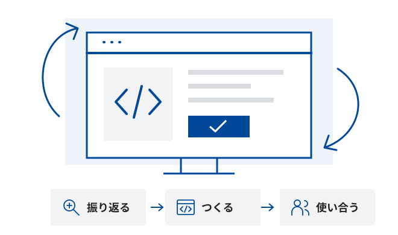

第6回で取り組んだこと
- 決める使う人と、最初に作る機能を決めた。
- つくる主な機能が動く最初の版を制作した。
- 使い合うアプリを使い合い、改善案を集めた。
2026年11月13日｜第7回｜プログラミング演習
自由制作から、最終発表へ
磨く。伝える。
次につなげる。
前回のフィードバックを、自分の作品に活かそう。

100分×2コマ｜各限の開始を0分として表示
次にすること：前回の成果と、今日改善することを確認します。
5分｜3限 0〜5分（道順・出席確認を含む）
前回の資料：第6回 総合演習①
100分×2コマ｜各限の開始を0分として表示
次にすること：第6回と同じ課題・提出物・評価の観点を確認します。
10分｜3限 5〜15分（課題・評価・提出方法の確認全体）
これまで作ったアプリの発展でも、新しいアイデアでも構いません。
誰に、どんな体験を届けたいですか？
提出物・評価・日程を確認
| 項目 | 確認すること |
|---|---|
| |
| Webアプリのキャプチャ動画 | 主な操作と、その結果がわかる画面録画 |
| Google AI Studioの共有リンク | 共有設定と、リンクから開けることを確認 |
| 公開URLから、ほかの人がアクセスして利用できることを確認 |
第7回(11/13) 4限に仮提出。発表後の改善を反映し、11/20までに最終提出します。
ユーザーの操作から、結果が画面に表示されるまで
例にならって、操作から表示までの処理を時系列で記述します。
ユーザー、フロントエンド、バックエンド、認証サービス、データベース、API、AIモデル（LLM）
自分のアプリに合わせて選びましょう。

仕組みを理解するための簡略例です。
ChatGPTの実際の内部構成を示すものではありません。
相対評価のため、各項目の点数は記載しません
| 項目 | 確認すること |
|---|---|
| データを保存・読み出し、画面や機能に反映 | |
| Authentication | ログイン・ログアウトと、状態に応じた機能・表示 |
| マイク／カメラ／Gemini API／外部API | いずれかを、アプリの機能や体験に活用 |
| 公開URLから、ほかの人がアクセスして利用 |
設定だけでなく、実際の動作を確認。Gemini APIの利用は、開発時のコード生成とは別です。
説明文・処理の流れと、アプリの画面・操作から確認
| 項目 | 確認すること |
|---|---|
| アプリの動作 | 目的に沿った主な操作を、開始から結果まで実演できる |
| 意図の伝わりやすさ | 説明文から、誰が・どんな場面で使い、何ができるかが伝わる |
| 処理の流れで、入力から結果が表示されるまでの処理を説明できる | |
| 利用規約の作成 | アプリ内に利用規約を記載し、AIの限界・入力情報の扱い・禁止事項などを利用者に伝える |
第3回「AIの活用と倫理」で考えたリスクを、今回のアプリの利用規約に反映しよう。
提出物・評価・日程を確認
説明・動画・共有リンク・デプロイリンクをそろえます。
提出先・ファイル名・締切時刻は別途案内。次はアンケート。回答が終わった人から制作を始めます。
5分｜3限 15〜20分
ご協力をお願いします。
回答が終わった人から、制作・改善を始めてください。
100分×2コマ｜各限の開始を0分として表示
次にすること：前回のフィードバックから優先する改善を1つ決めます。
65分｜3限 20〜85分
作ってきたAIとのチャットで、「作ったものを仕様として整理して」と伝えてみよう。
整理した仕様を修正して、作り直してもOK。
15分｜3限 85〜100分
未完成でも、動いている部分と、これから改善したい点を説明できるようにしよう。
100分×2コマ｜各限の開始を0分として表示
次にすること：出席を確認し、発表用のリンクを講師PCで開きます。
発表3分／人｜4限 5〜68分（21名の場合）
発表用のリンクを講師に共有し、講師PCで開きます（スライドは不要）。人数に応じて発表と提出物作成の配分を調整します。
22分｜4限 68〜90分（21名の場合）
第7回（11/13）4限に仮提出。提出先・ファイル名・締切時刻は別途案内します。
100分×2コマ｜各限の開始を0分として表示
次にすること：最終提出の締切は11/20です。アンケートが未回答の方は回答をお願いします。
5分｜4限 95〜100分
まだ回答していない方は、ご協力をお願いします。